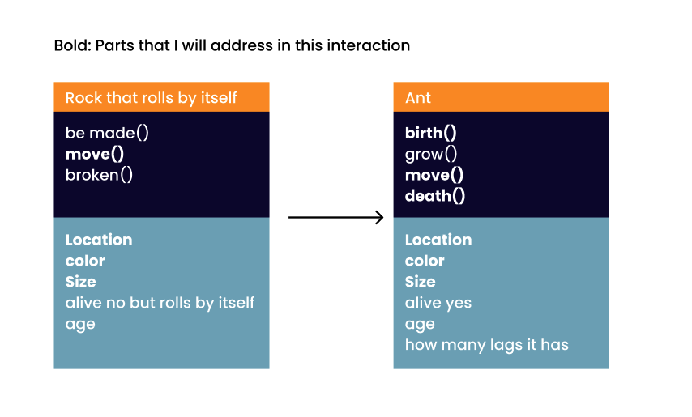
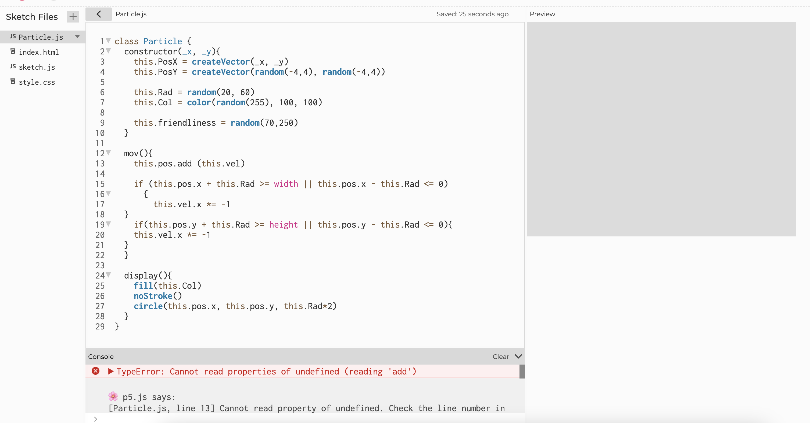
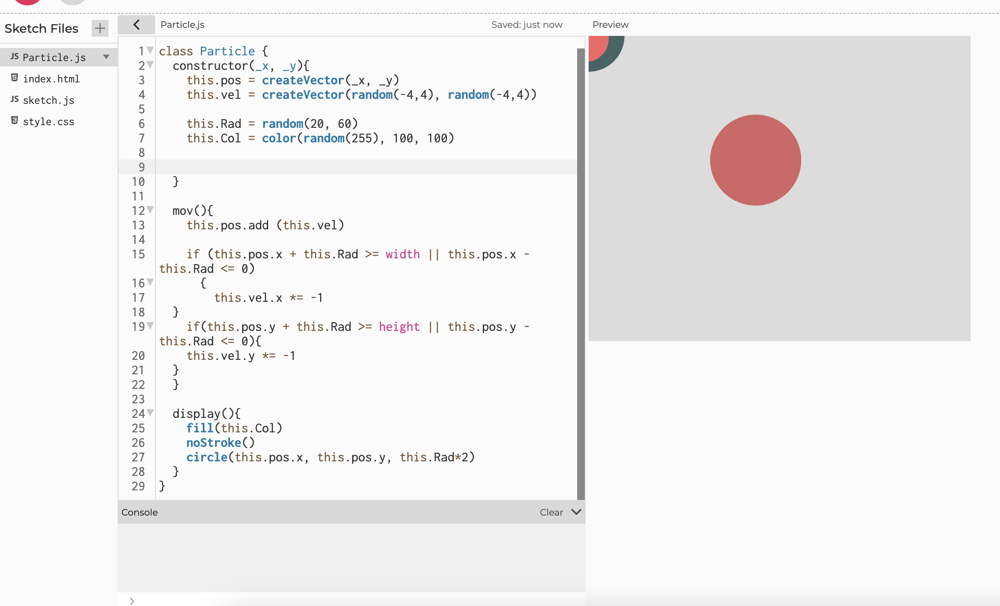
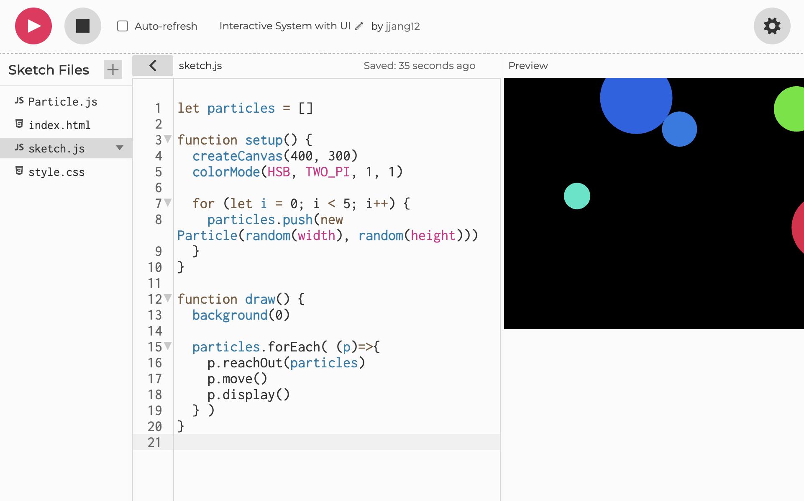

Interactive System with UI
Link for P5.js
Step0. UML diagram and a flow chart

Step 1. Create a Bouncing Circle
I created a circle that bounces back inside the canvas when it hits the edges. I used an if statement and a function that reverses the speed by multiplying it by -1. At first, I was confused and wrote += -1, which caused the circle to fly off the screen even faster. This experience helped me realize once again that multiplying by -1 is necessary to reverse the direction and make it bounce back inside.

Step 2. Debugg Teachable Machine and Camera Setup
I encountered two errors: the first one was "particle is not defined," and the second was "move is not a function." Initially, I started debugging the issues in `Particle.js`, fixing one thing at a time. I wondered if the problem was related to setting random colors, so I tried assigning specific colors instead. I also corrected typos, like changing `widht` to `width`, and fixed instances where I mistakenly wrote `width` instead of `height`. However, the issue persisted. The breakthrough came when I realized the problem was in `sketch.js`, where I had written `Particles = []` with an uppercase `P`. The `particle` here wasn’t referring to the file name but rather the actual particles, so it needed to be lowercase. The second error stemmed from a typo: I wrote `mov` instead of `move`. The function name in `Particle.js` must match exactly with how it’s called in `sketch.js`. After correcting these issues, everything worked as expected.


Step 3. Simplify the code
I got two errors, but the real issue wasn’t actually with the errors themselves—it was somewhere else entirely. The first error was, *“Cannot read property ‘add’.”* The problem was that I wrote `Pos` instead of `pos` in `pos.add`. While the issue made sense because it was related to `pos.add`, this taught me the importance of thoroughly checking other parts of the code as well. The second error was, *“Cannot read properties of undefined (reading 'x').”* This wasn’t a problem with the code where the error occurred, but rather because I wrote `pos` where I should have written `vel`. These experiences showed me that while errors often point out specific issues, they can also be caused by something else in the code, which leads to the error manifesting in an unexpected place.


Step 4. Revise the error(the particles always are appeared on the left top of the corner)
This was the part where I had to revise the most code. While following the lecture, I initially thought the reachOut function wasn’t necessary for my project, so I left it out. However, it seems that without this part, the friendless feature wasn’t properly connected. Most importantly, in the sketch.js file, I added the code particles.push(new Particle(mouseX, mouseY)) to specify the mouse position for creating particles. Without this, the computer didn’t know where the particles should be generated, causing confusion.

Step 5. Add Color to Particles
I made the particles appear from the start, with one being green and the others purple. To achieve this, I added a color type parameter to the constructor and modified the relevant conditional statements accordingly.

Step 6: Separate Colors to Differentiate Between Ants and Rocks
To make the initial circles look like rocks and the ones generated by mouse clicks look like ants, I set the initial circle to gray and the others to black. I achieved this by assigning the initial circle's creation to the setup function and the ant-like circles' creation to the mouseReleased function. The Particle.js file was also updated accordingly to reflect these changes.
Step 7: Make Black Ants Disappear Upon Collision
My code already had functionality to show connections between objects using the reachOut function. When two particles are within a distance of 70–250 pixels, a white line is drawn between them. However, I wanted black ants to disappear when they collided with rocks. To achieve this, I studied collision detection. Unfortunately, the tutorials I watched were difficult to adapt to my code, so I used ChatGPT to assist me. Here's what I learned: First, i represents black ants, and j represents rocks. I added an isTouching function in Particle.js to check if two particles were touching. I used partColor.levels[2] === 0 to check if one of the colliding particles was black.
When this condition was met, I removed the corresponding i particle using splice(i, 1).